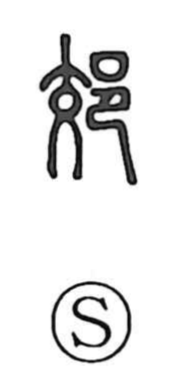

郊

Uncategorized
Kun: | On: kou
suburbs ・ outskirts ・ frontier
Explanation
A phono-semantic compound: the left-hand 阝 is the abbreviated form of 邑, a walled settlement—what antiquity called a “city,” though by later standards closer to a village. The right-hand 交, originally depicting a person seen from the front with crossed legs, supplies the sound kou and the sense of two things coming into contact. Together they denote the zone where one settlement meets another—the city’s outer edge and, by extension, a country’s frontier where clans touch. Because such outer margins were seen as points where malevolent forces could enter, rites were performed there, notably suburban exorcisms led by a marquis to ward off evil.